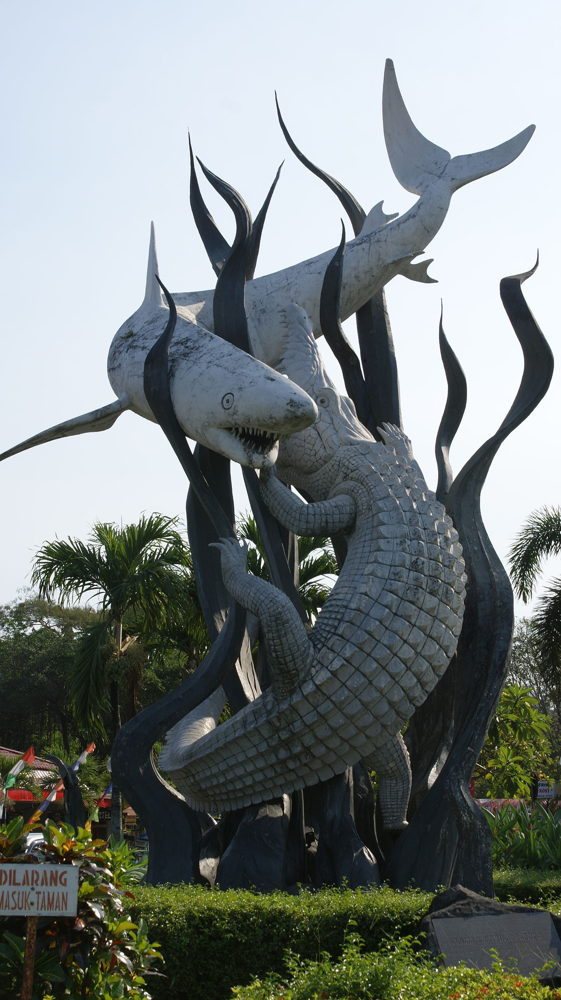

Hometown
Surabaya
is the capital of the Indonesian province of East Java and the third-largest city in the country, after Jakarta and Bekasi. The city has a population of 2.89 million within its city limits in 2019 and 9.5 million in the extended Surabaya metropolitan area, making it the third-largest metropolitan area in Indonesia. It is also one of the earliest port cities in Southeast Asia.
